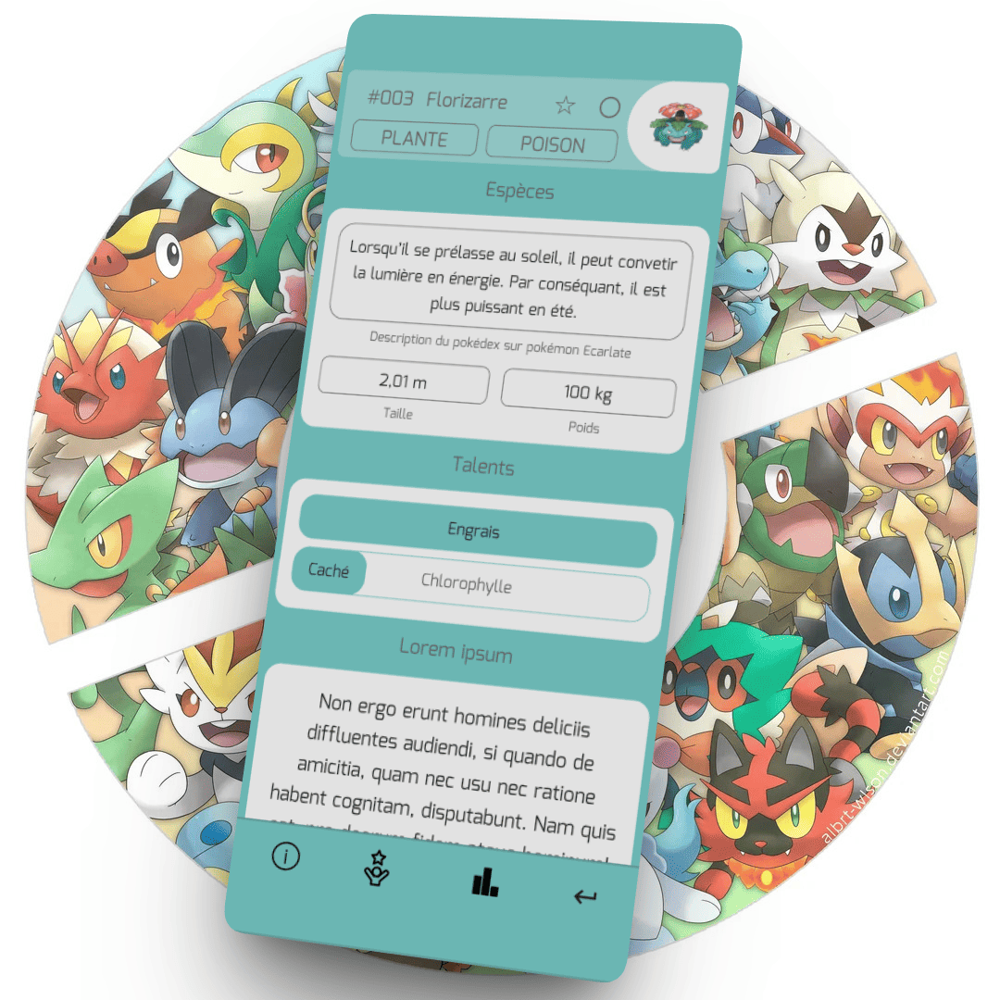
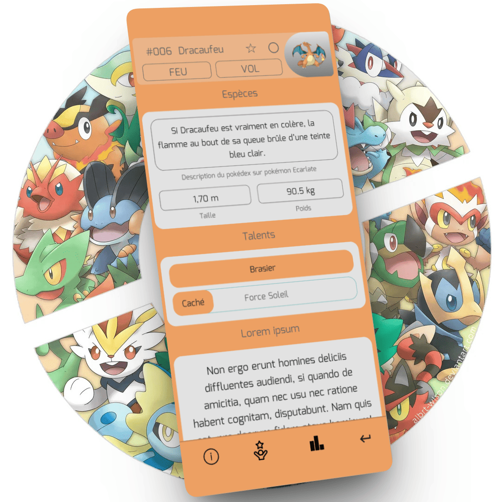
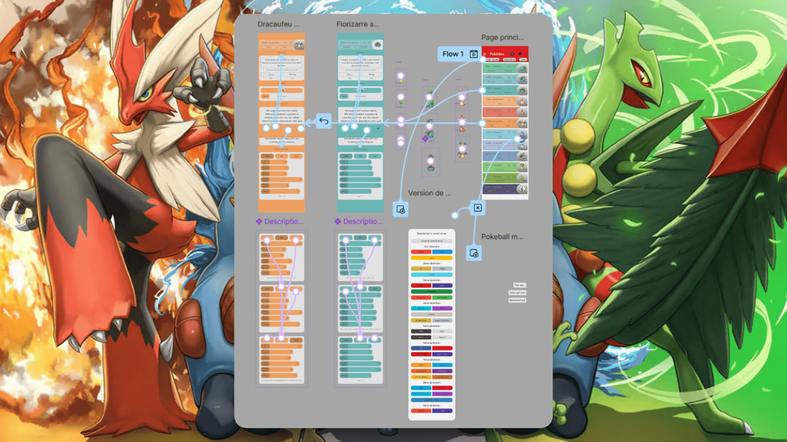

Pokédex
Compétences : Figma
Avec qui : Melvin Mateta
Quand : Juin 2025
J'ai créé une frame qui intéragit quand on click sur la pokéball.
C'est une overlay qui est fix. J'ai mis un background noir avec une opacité de 25% pour faire ressortir la frame par dessus. Quand on click à nouveau sur la pokéball, l'overlay se ferme. J'ai rajouté une animation pour faire apparaître la frame de bas en haut.
J'ai créé une frame qui intéragit quand on click sur "Version du jeu".
C'est une overlay qui peut être scroll. J'ai aussi mis un background noir avec une opacité de 25% pour faire ressortir la frame par dessus. J'ai crée un rectangle insivible au dessus de l'overlay qui s'ouvre (la partie où on voit la frame d'avant). Quand on click sur la frame d'avant, l'overlay se ferme. J'ai aussi rajouté une animation pour faire apparaître la frame de bas en haut.

Quand on clique sur un Pokémon on accède aux informations de ce Pokémon. La couleur choisie varie en fonction du Pokémon. Il y a quatre parties : Espèces, Talents, une description un peu plus détaillée du Pokémon et Stats. En bas, il y a quatre boutons. Elle permet de se déplacer dans une des quatre parties. Le bouton tout à droite permet de revenir à la frame où on était avant.

Ce composant comporte trois variantes : stats, min et max. Par défaut, il est réglé sur la variante stats. Quand l’utilisateur clique sur min ou max, une courte animation se déclenche pour faire la transition vers la variante choisie.

Lien du projet : Voir le projet
Déroulé : Description détaillée du projet.
Enjeux : Quels challenges ont été relevés.
Plus-value : Impact ou bénéfices du projet.